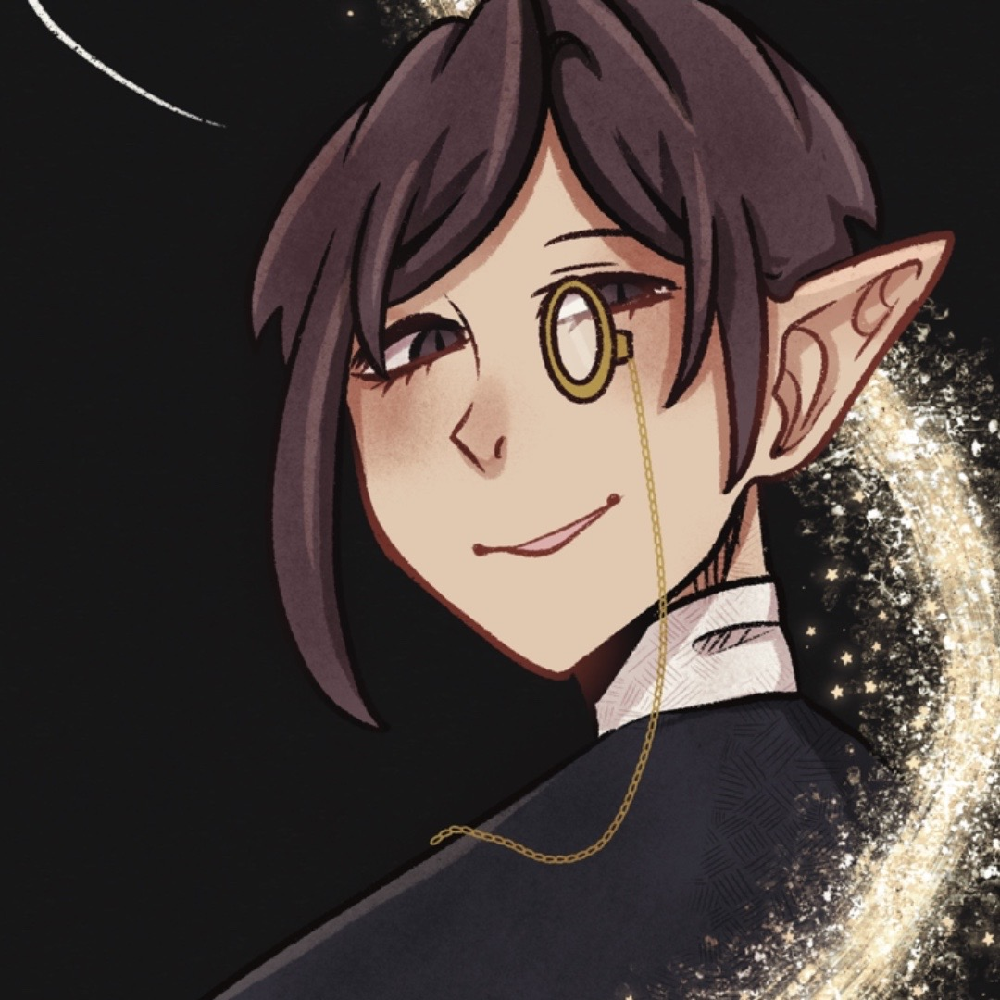

Abbington Leslie is the butler of Dhoebrick Manor, hes a kind and gentle soul who helped raise
Hazel.
Its unknown what Leslie is, all Hazel ever knew is that hes the only one his grandmother trusted
with anything, which made Hazel trust him.
Abbington will guard the Madam until her last breath...
Abbingtons nice attire makes him perfect apperarance wise to match the madam in any situation.
He's a genteleman who always thinks of others first and would do anything to help out the Shoe
Family or Noelle.
Abbingtons abilities are unknown but id like him to be a sort of Caster.

Leslie Abbington was taken in by the Madam a long time ago, he helped raise all her decendants so his exact
age is unknown, all anyone knowns is that hes the only one who knew who the Madams lover was, which makes
him a rather trustworthy man to the family, once Hazels mother died he took on the role for emotionally
caring for Hazel which is why hazel isnt too broken.
Back to Top